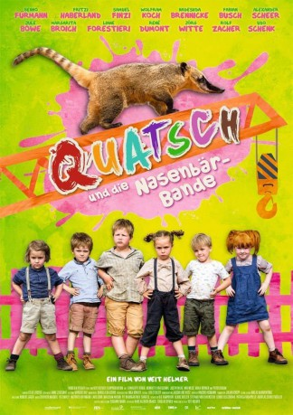

#8806 Quatsch und die Nasenbärbande
 
 IMDB-Wertung: 6.3 / 10
IMDB-Wertung: 6.3 / 10  Metascore: 0
Metascore: 0 
Das Leben der Kinder von Bollersdorf könnte so schön sein, wenn der Ort wegen seiner Durchschnittlichkeit nicht von der Gesellschaft für Konsumforschung entdeckt worden wäre. Hier sollen neue Produkte getestet werden. Was den Bollersdorfern gefällt, lässt sich überall gut verkaufen, wissen die Marktforscher. Doch während die Eltern des Ortes begeistert mitmachen, haben ihre Kinder schnell die Rotznasen voll von den lästigen Warentestern. Erst recht, als sie ihre geliebten Omas und Opas ins Heim abschieben wollen, damit der Altersdurchschnitt wieder passt. Das ist ein Fall für die Nasenbärenbande! Gemeinsam mit dem pfiffigen Nasenbären Quatsch hecken die Kinder einen cleveren Plan aus: Mit abenteuerlichen Erfindungen und verrückten Weltrekorden wollen sie Bollersdorfs Einzigartigkeit beweisen, damit die Konsumforscher endlich wieder verschwinden…
Jahr: 2014
Dauer: 79 Minuten
FSK: 0
Land: Deutschland Studio: Farbfilm VerleihTonspuren:
Untertitel:
Auflösung: 1080p (1920x1032) Größe: 7464 MB
Genre: Familie
Regisseur: Veit Helmer
Drehbuch: Hans Ullrich Krause
Soundtrack: Malcolm Arison, Cherilyn MacNeil, Carsten Wegener
Darsteller:
 Fritzi Haberlandt als Gaby
Fritzi Haberlandt als Gaby Nadeshda Brennicke als Marianne
Nadeshda Brennicke als Marianne Samuel Finzi als Gerhard
Samuel Finzi als Gerhard- Liane Forestieri als Claudia
 Wolfram Koch als Jörg
Wolfram Koch als Jörg Benno Fürmann als Tierpfleger
Benno Fürmann als Tierpfleger Alexander Scheer als GKF-Manager
Alexander Scheer als GKF-Manager Christian Harting als GKF-Manager
Christian Harting als GKF-Manager Volker Michalowski als Polizist
Volker Michalowski als Polizist- Eva Haßmann als TV-Journalistin
 Susanne Bormann als Werbefamilie
Susanne Bormann als Werbefamilie- Rolf Zacher als Rekordrichter
- Sarah Alles als Nasenbär
- Vera Kluth als Frieda
- Renée Dumont als Günther
- Nora Börner als Rieke
- Ulrich Voß als Fritz
- Justin Wilke als Max
- Florentine Morawe als Juliane
- Lissy Tempelhof als Julietta
- Charlotte Röbig als Lene
- Jule Böwe als Sabine
 Margarita Broich als Elke
Margarita Broich als Elke- Jörg Witte als Klaus
- Pieter Budak als Paul
- Achim Hübner als Gustav
- Uli Krohm als Rembert
- Fabian Busch als Otto
- Mio Mattis Weise als Ben
- Henriette Kratochwil als Suse
- Georg Tryphon als Oskar
- Deniz Kara als GKF-Manager
- Udo Schenk als Stadtrat
- Rudolf Krause als Polizist
- Clemens Buchwald als Werbefamilie
- Jeno Stillmark als Werbefamilie
- Lilly-Marie Lenhard als Werbefamilie
- Eddie Irle als Altenpfleger
- Paul Schlase als Altenpfleger
- Peter Pauli als Apotheker
- Pauline Stolze als Verkäuferin
- Henning Peker als Schaffner
- George Wainwright als Rekordrichter
- Dito als Rekordrichter
- Ucb Cheerleader Sc Staaken als Cheerleaders
- Schwimmverein Zwickau als Wasserballett
- Quatsch als Nasenbär
- Sunny als Seine Freundin
- Barbara Gfeller als Arienkatze
- Amandine Thiriet als
Datei: X:\2014(N-Z)\Quatsch und die Nasenbärbande (2014, FSK0, 1920x1032).mkv seit 30.04.2018
Festplatte: HD 2013(I-Z)-2014(A-Z)
 Es gibt insgesamt 163 Filme in der Gruppe '2014(N-Z)'
Es gibt insgesamt 163 Filme in der Gruppe '2014(N-Z)'